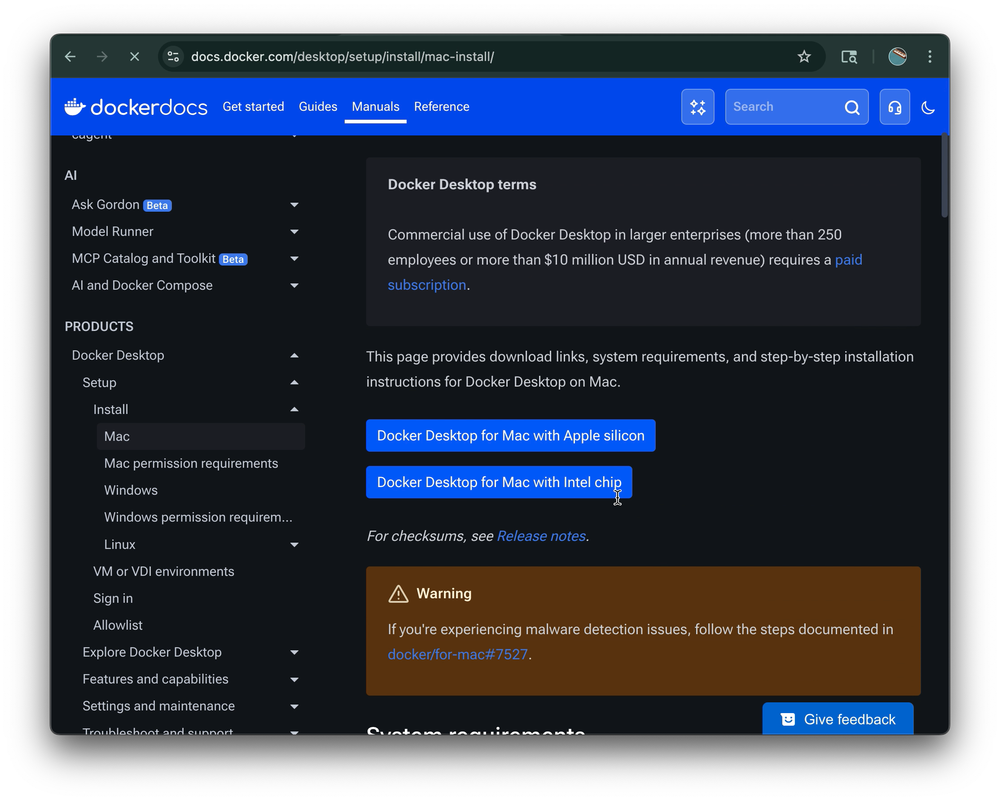

01
Docker is like a virtual machine, it runs in a container on the operating system (os), the OS Kernal communicates with the Hardware components,
- CPU
- Memory
- storage
- etc.. (probably GPU too idk?)

02
The container of docker operaters with the top OS Applications layer, and uses its host's
kernal, as
oppose to a virtual machines that uses its own kernal

03
Containers in Docker are Much smaller than VM's, but not compatible with all OS's
**pics from tutorial @13:59, click tutorail img top right
04
Docker Desktop seems to fix this
**pics from tutorial @16:26, click tutorail img top right